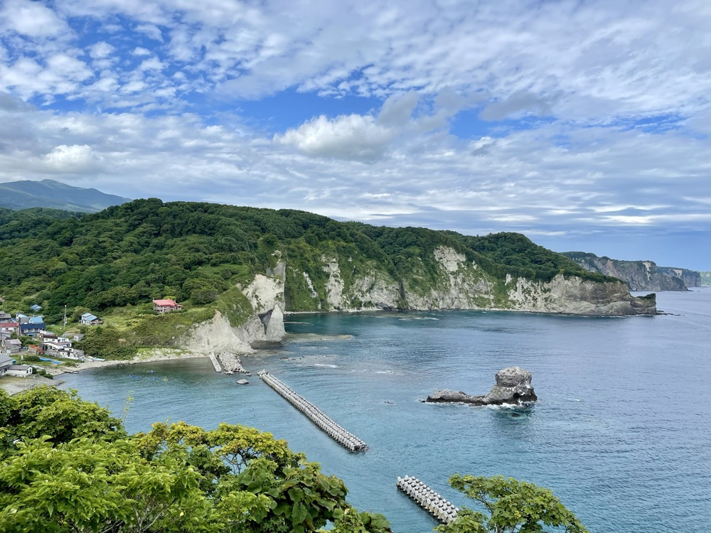
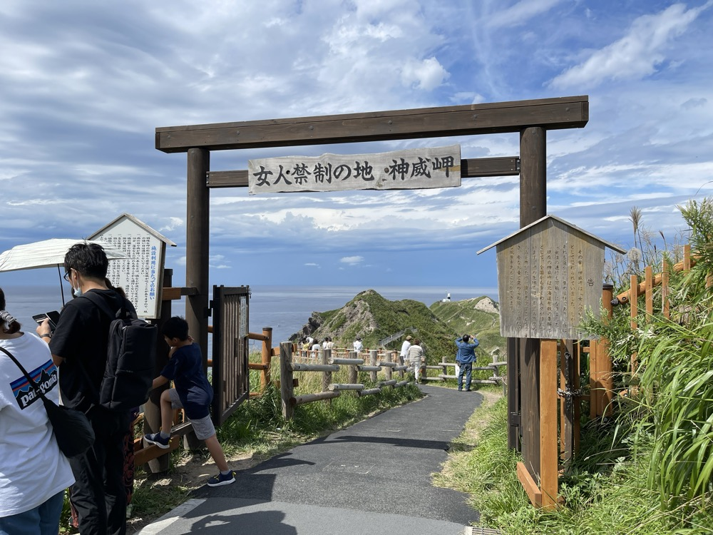
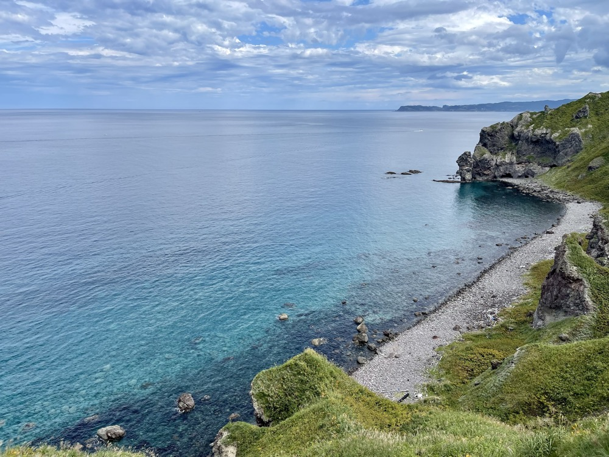
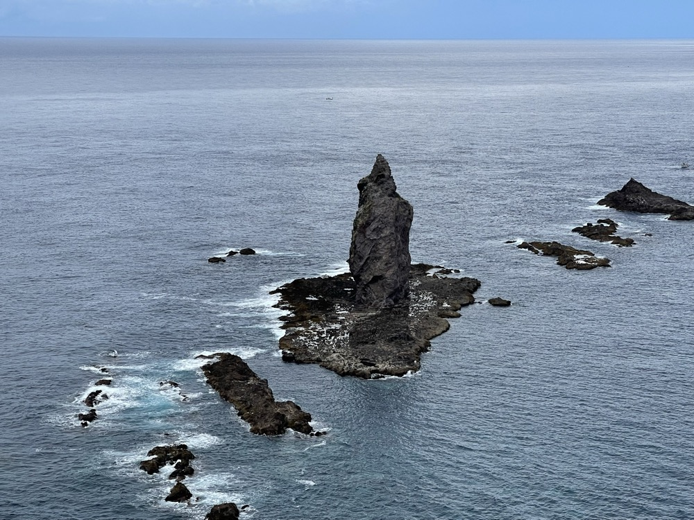
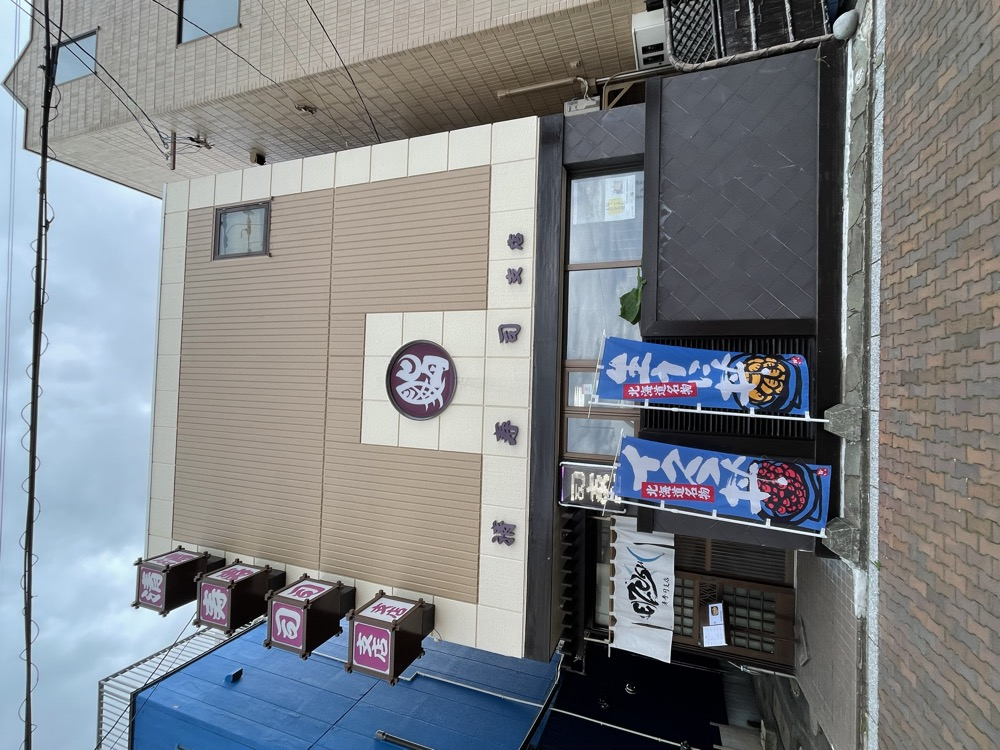
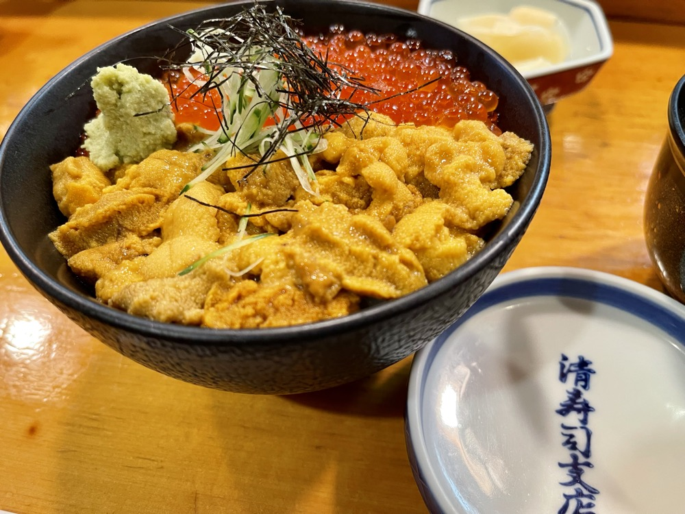

3日目は積丹半島ドライブの日。日本海に突き出た半島の海岸線を一日かけて走り、美国の黄金岬と神威岬を巡る。北海道のドライブで一番見たかった景色がここにあった。
積丹海岸——透き通る日本海
余市から国道229号を西に。海岸沿いを走るうちに、海の色がどんどん透明度を増していく。緑の山と切り立った海食崖、その間を縫うように走る道道。積丹ブルーと呼ばれる海の色は、これから先の半島でいよいよ本領を発揮する。

美国の黄金岬——朝の入江
神威岬へ向かう途中、美国（びくに）にある黄金岬に立ち寄った。留萌の同名の岬と混同されがちだが、ここは積丹半島の小さな漁港町・美国の高台にある展望ポイント。眼下にはターコイズ色の入江と漁港、そして海面に点々と広がる岩礁が広がる。観光客は神威岬よりずっと少なく、静かに絶景を独占できる穴場だ。

神威岬——「女人禁制」の岬
美国を後にしてさらに西へ。積丹半島の先端に位置する神威岬は、日本海に細長く突き出た岬だ。駐車場から先端までは遊歩道「チャレンカの道」を歩いて約20分。入口には「女人禁制」と書かれた木の門が立っている。これは江戸時代後期、松前藩が女性の立ち入りを禁じていた歴史に由来する伝統的な掛け札で、現在は禁制ではないがシンボルとして残されている。

遊歩道は絶壁の稜線をくねくねと進むつくりで、両側が崖、足元には積丹ブルー。風の強い日は怖さもあるが、それを上回る景色がある。

展望台から見下ろす日本海の青さは、本当に「積丹ブルー」と名付けたくなる色だ。透明度が高く、浅瀬の岩礁まではっきり見えるほど。

そして岬の先には神威岩。海中から鋭くそびえ立つ岩礁が、神威岬のシンボルだ。アイヌ語の「カムイ（神）」が示すとおり、古くから神聖な場所として崇められてきた。

清寿司支店——美国のウニ・イクラ丼
遅めの昼食は、美国の清寿司支店へ。積丹半島は夏のウニで有名で、6〜8月の漁期には新鮮なバフンウニが並ぶ。注文したのはウニ・イクラ丼。バフンウニのねっとりとした甘さと、イクラのプチプチした塩気がご飯に重なる、夏の積丹でしか味わえない一杯だ。


夕方、車で函館へ向けて長距離ドライブ。積丹から函館までは250km以上、約4時間半の道のり。明日の朝市に間に合わせるための移動日でもあった。
積丹ブルーは写真で見るより実物のほうが鮮やかだった。北海道で一番見たかった景色がここにあった。